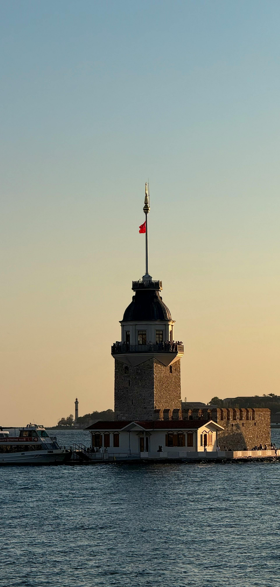

Turquia (Türkiye)
Turquia faz conexão entre importantes áreas da Europa e da Ásia, tendo seu território situado em ambos os continentes. O país conta atualmente com 85 milhões de habitantes.
A Turquia é um país transcontinental situado entre a Ásia e a Europa. É uma das principais nações emergentes do globo e possui grande poder geopolítico em nível regional. A formação do Estado moderno da Turquia ocorreu após o fim da Primeira Guerra Mundial (1914–1918). Atualmente, ela é um país emergente, com grande população absoluta e vasto parque industrial. Os turcos possuem adversidades históricas com vários países vizinhos e detêm um grande aparato militar. A Turquia é um país-membro da Organização do Tratado do Atlântico Norte (OTAN) e busca o ingresso na União Europeia (UE). Sua cultura é fortemente influenciada pelo islamismo, a religião predominante no país.

Resumo sobre a Turquia
- A Turquia é um importante centro regional de turismo e de negócios que está situado entre a Europa e a Ásia.
- A formação do Estado moderno da Turquia ocorreu após o fim da Primeira Guerra Mundial (1914-1918).
- A Turquia está geograficamente localizada entre a porção mais sudeste da Europa e a mais sudoeste da Ásia.
- As maiores cidades em população dela são: Istambul, Ancara, Esmirna, Bursa, Adana, Gaziantep e Cônia.
- Sua economia é diversificada, com destaque para o grande parque industrial e para a oferta de serviços turísticos.
- O país tem se modernizado ao longo das últimas décadas em razão da aproximação cultural com os países europeus.
Dados gerais
- Nome oficial: República da Turquia
- Gentílico: turco
- Extensão territorial: 783.562 quilômetros quadrados
- Capital: Ancara
- Clima: temperado
- Governo: república presidencialista
- Idioma: turco
- Religiões:
- 90% (islamismo);
- 9% (ateísmo);
- 1% (outras).
- População: 85.043.000 habitantes
- Densidade demográfica: 110 habitantes/quilômetro quadrado
- Índice de Desenvolvimento Humano (IDH): 0,820 (elevado)
- Moeda: Lira turca
- Produto Interno Bruto (PIB): US$ 844,53 bilhões
- PIB per capita: US$ 9860
- Gini: 41%
- Fuso horário: UTC+3
- Relações exteriores:
- Organização das Nações Unidas (ONU);
- Organização do Tratado do Atlântico Norte (Otan);
- Organização para a Cooperação e Desenvolvimento Econômico (OCDE).
- Divisão administrativa: sete regiões, sendo elas:
- Egeu
- Anatólia Oriental
- Sudeste da Anatólia
- Mar Negro
- Mármara
- Anatólia Central
- Mediterrâneo
Geografia da Turquia
A Turquia está localizada entre a porção mais sudeste da Europa e a mais sudoeste da Ásia. O território turco faz fronteira com Bulgária, Grécia, Geórgia, Armênia, Irã, Iraque e Síria. Os mares que banham a Turquia são o Mármara, o Negro, o Egeu e o Mediterrâneo. Praia no litoral da Turquia.
- Relevo da Turquia: é bastante heterogêneo, com forte presença de montanhas no interior, fruto de processos geomorfológicos recentes chamados de dobramentos modernos. Já as planícies estão concentradas ao longo do litoral do país. A Turquia é uma região sujeita a inúmeros tremores de terra e registrou fortes terremotos ao longo da sua história.
- Clima da Turquia: é do tipo temperado, com suas variações fortemente influenciadas pela presença de umidade. O clima mais ameno e chuvoso predomina ao longo do litoral do país, inclusive em regiões com tendência ao registro de clima mediterrânico. Já no interior, predomina uma variável do temperado continental, com clima mais seco e registro de maiores amplitudes térmicas.
- Vegetação da Turquia: é formada principalmente por estepes. Já nas regiões litorâneas, predomina a vegetação mediterrânica, enquanto no interior mais úmido há manchas de floresta temperada.
A hidrografia local é formada por rios de grande extensão e magnitude, como o Kura e o Aras. Na Turquia estão situadas as nascentes dos rios Tigres e Eufrates.
Mapa da Turquia

Demografia da Turquia
A Turquia possui cerca de 85 milhões de habitantes. O país é considerado muito populoso e povoado. A maior parte da população mora nas cidades. Em termos populacionais, as maiores cidades da Turquia são: Istambul, Ancara, Esmirna, Bursa, Adana, Gaziantep e Cônia. A população é formada principalmente por turcos nativos e curdos. A taxa de natalidade do país é positiva, e os turcos vêm apresentando forte envelhecimento populacional. A emigração, especialmente para a Europa, também é um fenômeno recorrente na Turquia.

